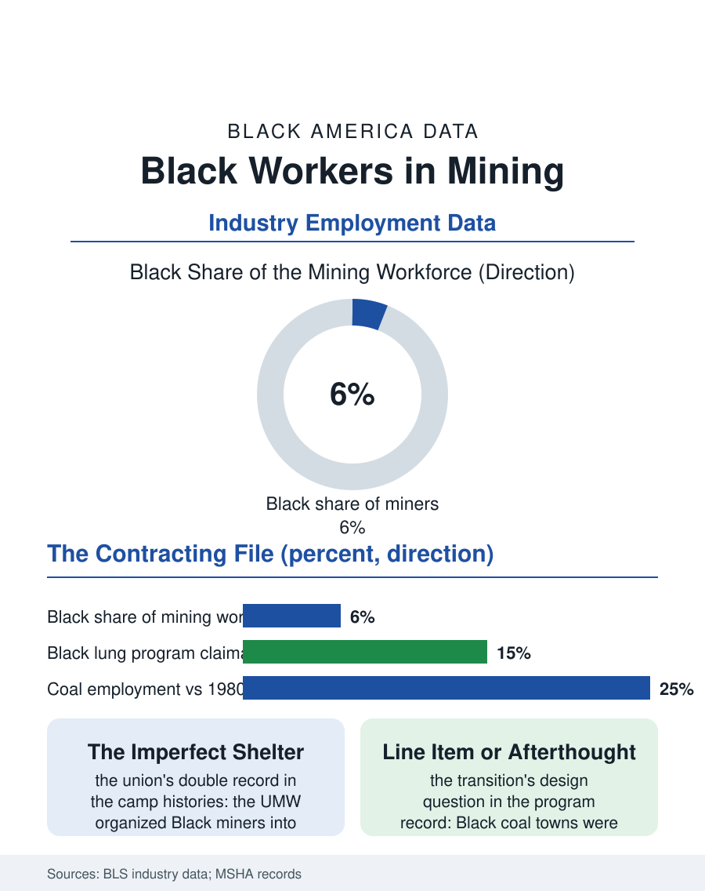

Black Employment
The Seam: Black Workers in Mining
Black miners built the coal camps, the union's imperfect shelter, and the pensioner towns the energy transition is leaving last. The mining file.

Black miners dug a decisive share of the coal that industrialized America, in the Appalachian and Alabama fields where the operators recruited them as strikebreakers and the unions' color line decided, camp by camp, whether the mine's brotherhood included them. The current mining workforce's Black share runs in the mid single digits, in an industry whose long contraction has made it a heritage file as much as a labor one. This article reads the mining file.
The Camps and the Color Line
The historical file is written in the company towns: the coal operators of Alabama's Birmingham district and the southern West Virginia fields built their workforces with Black miners recruited from the cotton belt, housed in the segregated camps, and paid in the scrip of the company store, while the convict lease system, at its Alabama height, supplied the mines a coerced Black labor whose mortality the state records preserved. The union story is the file's contested core: the United Mine Workers, alone among the era's major industrial unions, organized Black miners into the same locals in principle, a policy the union's historians credit and its critics qualify with the locals' segregated practice in much of the South, so that the Black miner's twentieth century ran between the operator's exploitation and the union's imperfect shelter, with the pension and health funds the union won becoming, in the industry's decline, the retired Black miner's lifeline. The occupational health file is the industry's shadow: black lung disease, the coal workers' pneumoconiosis whose name the culture misreads as a racial term, fell on the underground workforce as a whole, its federal benefits program's rolls including the Black miners of the Alabama and Illinois fields, and the disease's resurgence in the central Appalachian thin-seam mines is the current era's occupational scandal in the health data.
The Contracting Industry
The modern mining workforce in the Bureau of Labor Statistics data is a fraction of its mid-century size, coal's long decline compounded by the mountaintop and longwall technologies that produce more coal with fewer miners, and the Black share of the remnant concentrates in the industry's geography, the Alabama and Illinois basins and the southern Appalachian fields holding most of what the migration left. The metal and nonmetal mining file, the quarries, the phosphate and the aggregate pits of the construction economy, employs a steadier Black workforce in the South's industrial belt, the work's wages and hazards in the pattern of the heavy trades. The industry's political economy, the coal counties' dependence and the energy transition's geography, maps onto the Black mining communities with a particular weight, since the Black coal towns, the Widen and Keystone and Kimball of the oral histories, were built by the industry entire, their churches and their pensioner populations the file's surviving institutions, facing the transition with the least diversified local economies in the energy data. The reclamation and mine closure workforce, the transition's own employment, hires on the same ground, and the just transition programs' design question, whether the Black miners and their towns are line items or afterthoughts, is answered, in the program record to date, closer to the latter.
What the Seam Left
The mining file closes on the industry's ledger in Black life: the wages that bought the houses of the coal camps' successor towns, the union card that was, for thousands of Black families, the first institutional membership the century offered, the lungs that paid the difference, and the culture the camps produced, the gospel and blues traditions carried out of the fields in the migration's luggage. The current workforce's small numbers make the file a closing one in this atlas's employment section, but the heritage is load-bearing: the Black miner is a founding figure of the industrial working class the labor files describe, and the industry's contraction does not retire the figure's claim on the record. The bureau counts the active Black miners in the low thousands now. The pension rolls, the black lung clinics' patient lists, and the coal town churches count the file's true population, the retired and the widowed and the towns themselves, for whom the seam's closing is not history but the present tense, managed on the union's old funds and the community's own, in the hills where the digging made them.
More in Black Employment
The Black Unemployment Rate: The Two-to-One Pattern
Black unemployment runs at roughly twice the White rate — 5.5 percent against 3.3 percent in annual averages — a ratio stable across five decades of federal data. How it is measured and why it persists.
Black Median Weekly Earnings: The 80-Cent Ratio
Black full-time workers earn a median of about $900 a week — roughly 80 cents for every dollar White workers earn. The BLS earnings data by group, gender, and occupation.
Black Labor Force Participation: Working at National Rates
Black labor force participation runs at roughly the national rate — and Black women participate at higher rates than White women. The BLS participation data.
Source: Bureau of Labor Statistics industry employment data; Mine Safety and Health Administration records; Black Lung Benefits Program data.